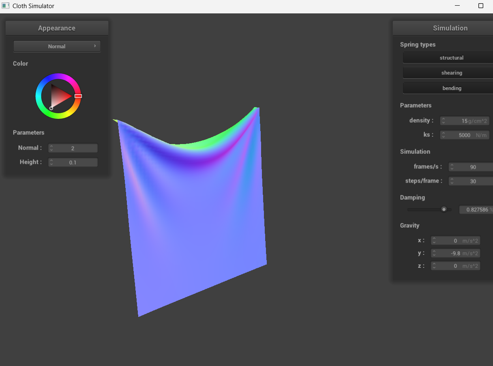

In this homework, I first built a system of grid of masses and springs, in order to design the fundamental structure for the cloth, and the springs for applying
structural, shear, and bending constraints to be used while the cloth drapes over my sphere in the later parts of the homework.
After the initial cloth structure was built, I applied external forces such as gravity and spring correction forces to keep the cloth together, to simulates
how the cloth would behave from one timestep to next as it falls from its initial position.
Then, I handled the collision of the cloth with other objects (sphere and plane), and also self-collision, to ensure that the cloth does not fall onto and inside itself,
properly "draping" over other objects like in real life. Lastly, I applied various types of shading for final cloth simulation, combining all my previous steps,
starting from Blinn-Phong to apply appropriate lighting and material, then textured and mirrored surfaces.
Part 1: Masses and springs
Screenshots of scene/pinned2.json
Wireframe with constraints
Without any shearing constraints
With only shearing constraints
With all constraints
Part 2: Simulation via numerical integration
A. Low ks vs. High ks
Low ks
High ks
Comparison: For low ks, the cloth looks more stretchy and sags more under gravity, and the difference
is more noticeable towards the end when it settles and finishes drooping.
For high ks, the cloth looks more rigid with less sag in the middle, with the bottom part of the cloth looking almost straight (grid structure).
B. Low density vs. High density
Low density
High density
Comparison: For low density, the cloth floats more gently, with slow motions and barely sagging between the pinned points on the top.
For high density, the cloth falls more heavily and rapidly, with more sag between the points.
The difference is noticeable throughout the entire phase.
C. Low damping vs. High damping
Low damping
High damping
Comparison: For high damping, the cloth falls slowly and the color also changes slowly.
For low damping, the cloth falls so fast that it would not stop swinging back and forth (never fully comes to rest).
The difference is noticeable throughout the whole process starting from the beginning, with the initial speed of cloth drop.
Pinned4.json at final resting state
Different parameters:
ks = 20
density = 2
damping = 0.011
ks = 20000
density = 40

damping = 0.828
Part 3: Handling collisions with other objects
For Sphere collision: I checked for each point mass, if it penetrated the sphere by comaring its distance to the origin and seeing if it's less than the radius.
In that case, I calculated the sphere surface intersection point, computed the correction vector to be applied to the point mass's last position,
and then adjusted the new position with correction vector and friction.
For Plane collision, I checked for each point mass, if it crossed the plane; if so, I projected it back to the plane along the plane's normal.
I checked if the point mass's last position and current position were on the opposite sides, then once again applied the correction vector (with small offset) and
friction to the point on the surface.
Screenshots of scene/sphere.json at final resting states
ks = 5000 (default)
ks = 500
ks = 50000
Comparison:
With ks = 5000, the cloth falls around the sphere the most naturally, while for ks = 500, the cloth looks a lot more
smooth and sags more, and ks = 50000 shows the cloth being very rigid and barely showing the round top of the sphere through the cloth.
Cloth at rest on the plane
Part 4: Handling self-collisions
For self-collision, I first implement spatial hashing and build a hash table that maps a float to a vector
point mass; the float represents a 3D box volume in the scene and the vector* contains all the point masses in that box.
Within my hash_position function, I create this map by partitioning the 3D boxes with dimensions w * h * t,
truncating the coordinates to the nearest 3D box with modulo (w, h, t) and then multiply by large prime numbers & XOR the combinations,
to distribute hashes evenly while minimizing hash collisions.
Then, I build the map I initially mentioned with build_spatial_map.
Lastly, I look up all potential cadidates in the hash map (in the same spatial box) that might collide with the current point mass, and if the distance between the
point mass and candidate is less than 2 * thickness, meaning that they would most likely collide with each other,
I apply a correction vector (by averaging them) to adjust the point mass's position so that they don't self collide.
Cloth falling from early to rest state
Early collision
Step 2
Step 3
More Restful State
Varying density
density = 3 (early)
(step2)
(step3)
density = 3 (final)
density = 30 (early)
(step2)
(step3)
density = 30 (final)
Comparison:
With smaller density, the cloth falls more slowly/gently and with less "ripples" on the cloth, and the way it folds over itself is very slow
with less number of total folds. With larger density, the cloth falls faster with more "ripples", and the cloth folds over more number
of times, looking less smooth.
Varying ks
ks = 50 (early)
(step2)
(step3)
ks = 50 (final)
ks = 50000 (early)
(step2)
(step3)
ks = 50000 (final)
Comparison:
With smaller ks, the cloth falls more rapidly with a lot of "ripples", and the cloth at the end almost
crumples onto itself with a lot of number of folds.
With larger ks, the cloth falls at a much slower rate, and the total number of folds is small, with very clean folds.
Part 5: Shaders
Shader program is a type of program that runs on the GPU to determine how 3D objects should be rendered on screen.
It is made up of 2 parts: vertex and fragment shader.
Vertex shader (.ver) is responsible for processing (reading & writing) each vertex, transforming vertex positions form 3D model space to 2D screen space,
interpolated using barycentric coordinates.
Fragment shader (.frag) is responsible for determining the final color of each pixel, taking the interpolated per-vertex values from .ver and writing per-pixel values.
The vertex shader runs first to process all the vertices, and the rasterization process in the pipeline converts these into fragments, and fragment shader
determines final color for each fragment. Fragment shader uses the interpolated data to determine lighting and calcualting appropriate brightness,
applying material properties, and outputting final pixel color to generate realistic lighting and material effects.
Blinn-Phong Model
Blinn-Phong is a type of shader, and it calculates light and material to create realistic surfaces. There are three components: ambient, diffuse, and specular.
Ambient reflection simulates indirect light and illuminates the scene. Diffuse reflection represents how the light hits surfae and scatters on the surface, and
specular reflection represents the shiny highlights. Adjusting ka and Ia is related to weighing the ambient term, kd is replated to diffuse term, and ks and p is related to specular (shininess).
The final output color takes the sum of these 3 components and accurately shows the result based on the lighting and material.
Ambient component
Diffuse component
Specular component
Entire Blinn-Phong
Texture Mapping Shader with custom texture
Default texture
Custom texture
Displacement and Bump Mapping
Bump mapping on cloth
Bump mapping on sphere
Displacement mapping on cloth
Displacement mapping on sphere
For bump mapping, the normal vectors of the object are modified so the fragment shader gives an illusion of details (bumps)
without actually changing the geometry. New normal directions are calculated by sampling the texture (height map at texture coordinates), using
formulas to calculate derivatives dU and dV. With the new normal (nd = TBN * no), the rest of the shader just reuses the blinn-phong calcualtions.
For displacement mapping, the geometry of the object is actually modified, so the positions of the vertices should also be modified to be consistent with the new geometry.
The frag file is the same, but for the vert file, the vertex positions are actually displaced along their normal directions (with height map samplings scaling applied),
and the geometric details results differently compared to bump shading.
The final rendered results for the spheres are very noticeably different, where the bump mapping shows the outline of the sphere to be completely smooth and round
despite the textures shown on the surface, aligning with the fact that they are just illusions. The cloth texture also looks very smooth, and the shadows are also smooth.
The cloth shape essentially looks the same as the blinn-phong result above, with illusions of depth and texture.
For displacement mapping, however, the sphere actually has a bumpy outline, following the details of the texture where there are dips and bumps where they should actually be;
the outline is rough and not smooth. The cloth also looks more textured and bumpy following the provided design, and shadows actually follow the dips/bumps of the cloth instead
of just falling in a smooth line.
Changing sphere courseness
Bump -o 16 -a 16
Bump -o 128 -a 128
Displacement -o 16 -a 16
Displacement -o 128 -a 128
For bump shading, changing the courseness shows little to no effect on the sphere, aside from the fine details on the surface (slightly smoother for 128) which makes sense
since they are just illusions of texture/depth. The sphere silhouette is perfectly symmetrical for both.
For displacement shading, increasing the resolution to 128 caused the edges of the sphere to be more "smoother",
similar to the shape of an actual sphere while following the texture patterns, while the resolution 16 shows the edges of the
sphere being quite chunky and irregular. This is because there is limited geometry, so the dips and bumps are not able to be properly captured
due to insufficient number of vertices to displace.